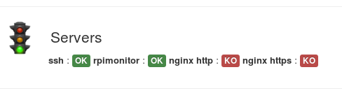

Configuration templates¶
RPi-Monitor comes with example files showing the capabilities of some features
and functions available in status page.
These files are installed into /etc/rpimonotor/templates/
To see how a specific file is behaving, you can include this file into your
configuration file using the include.
Hint
By default, files are included and commented out into data.conf.
To activate them, you can simply uncomment them and restart rpimonitord.
Note
Remember to restart RPi-Monitor to apply the configuration change:
sudo /etc/init.d/rpimonitor restart
Page header¶
This function allow to define a custom logo, custom title.
Here is and example of configuration : /etc/rpimonitor/template/example.header.conf
web.page.icon='img/avatar.png'
web.page.menutitle='XB-Monitor <sub>('+data.hostname+')</sub>'
web.page.pagetitle='XB-Monitor ('+data.hostname+')'
data.hostname is a value automatically extracted by RPi-Monitor. It is not
needed to add a configuration.
The file avatar.png has been added into /usr/share/rpimonitor/web/img/.
Here is the result:
See also
See defails in Header customisation
Friends¶
Add “friends” links RPi-Monitor running on different platform together.
A friend is simply another computer running RPi-Monitor. Configuring friends will add a drop down list on the right of the top menu with a links to RPi-Monitor sitting on the other computer.
Each friend is identified by an id and is described by 2 parameters: <name> and <link>.
Here is an example of configuration : /etc/rpimonitor/template/example.friends.conf
web.friends.1.name=Raspberry Pi
web.friends.1.link=http://192.168.0.123/
web.friends.2.name=Shuttle
web.friends.2.link=http://192.168.0.2/
web.friends.3.name=Netbook
web.friends.3.link=http://192.168.0.38/
See also
See details in Friends definition
Badges and labels¶
The functions Label and Badge are designed to write a text highligted by a color base on condition.
Here is an example of configuration : /etc/rpimonitor/template/example.badge_and_label.conf
dynamic.1.name=ssh
dynamic.1.source=netstat -nlt
dynamic.1.regexp=tcp .*:(22).*LISTEN
dynamic.2.name=rpimonitor
dynamic.2.source=netstat -nlt
dynamic.2.regexp=tcp .*:(8888).*LISTEN
dynamic.3.name=http
dynamic.3.source=netstat -nlt
dynamic.3.regexp=tcp .*:(80).*LISTEN
dynamic.4.name=https
dynamic.4.source=netstat -nlt
dynamic.4.regexp=tcp .*:(443).*LISTEN
web.status.1.content.1.name=Servers
web.status.1.content.1.icon=daemons.png
web.status.1.content.1.line.1="<b>ssh</b> : "+Label(data.ssh,"==22","OK","label-success")+Label(data.ssh,"!=22","KO","label-danger")
web.status.1.content.1.line.2="<b>rpimonitor</b> : "+Label(data.rpimonitor,"==8888","OK","label-success")+Label(data.rpimonitor,"!=8888","KO","label-danger")
web.status.1.content.1.line.3="<b>nginx http</b> : "+Label(data.http,"==80","OK","label-success")+Label(data.http,"!=80","KO","label-danger")
web.status.1.content.1.line.4="<b>nginx https</b> : "+Label(data.https,"==443","OK","label-success")+Label(data.https,"!=443","KO","label-danger")
In this example, we monitor if the service ssh is listening on port 22 and display a
label OK if yes or a label KO if not.
We do the same for RPi-Monitor on port 8888 and for nginx on port 80 and 443.
Information is extracted from the command netstat.
The regular expression will return the port number if a service is listening on this port or nothing if no service is listenning on this port.
The results are accessible into javascript from the variable data. This variable is passed to the Label function as value.
For ssh, the condition is "==22" to check if the value is equal to
22 or "!=22" to check if the value is different form 22. As only one of
the condition will be true, only one label will be displayed.
Other ports checking are using the same technic.
Here is the result:
Multiple pages¶
Status and statistics can be sorted in pages. The parameter <page id> of
web configuration is defining in which page data is displayed.
Here is an example of configuration : /etc/rpimonitor/template/example.multipage.conf
web.status.1.name=Status 1
web.statistics.1.name=Statistics 1
web.status.2.name=Status 2
web.statistics.2.name=Statistics 2
dynamic.1.name=data1
dynamic.1.source=od -vAn -N2 -tu2 < /dev/urandom
dynamic.1.regexp=(\d+)
dynamic.1.postprocess=$1%100
dynamic.1.rrd=GAUGE
dynamic.2.name=data2
dynamic.2.source=od -vAn -N2 -tu2 < /dev/random
dynamic.2.regexp=(\d+)
dynamic.2.postprocess=$1%100
dynamic.2.rrd=GAUGE
web.status.1.content.1.name=Data1
web.status.1.content.1.icon=cpu_temp.png
web.status.1.content.1.line.1="data1: <b>"+data.data1+"</b>"
web.statistics.1.content.1.name=Data 1
web.statistics.1.content.1.graph.1=data1
web.statistics.1.content.1.ds_graph_options.living_room_temp.label=Data 1
web.status.2.content.1.name=Data2
web.status.2.content.1.icon=cpu_temp.png
web.status.2.content.1.line.1="data1: <b>"+data.data2+"</b>"
web.statistics.2.content.1.name=Data 2
web.statistics.2.content.1.graph.1=data2
web.statistics.2.content.1.ds_graph_options.living_room_temp.label=Data 2
The new page will be accessible by a drop down menu as shown in the screenshot bellow.
RPi-Monitor showing multiple status pages
RPi-Monitor showing multiple graph pages

{kind=link}
{kind=link}
{kind=link}
{kind=link}
example.justgage.conf¶

Show justgage and customisation
{kind=link}
JustGageBar¶
A new widget is now available to display information in status page. Justgage is a handy JavaScript plugin for generating and animating nice & clean gauges. It is based on Raphaël library for vector drawing, so it’s completely resolution independent and self-adjusting.
JustGageBar(title, label,min, value, max, width, height, levelColors, warning, critical)
- To see how justgage behave, you can activate the configuration file
example.justgage.conf - (Ref example explaination and screenshot upper).
Visibility¶
A new parameter can be used in configuration file defining a visibility of a row:
web.status.<page id>.content.<row id>.visibility=<visibility formula>
<visibility formula> should be a valid javascript formula returning 0 to
hide the row anything else but 0 show the row